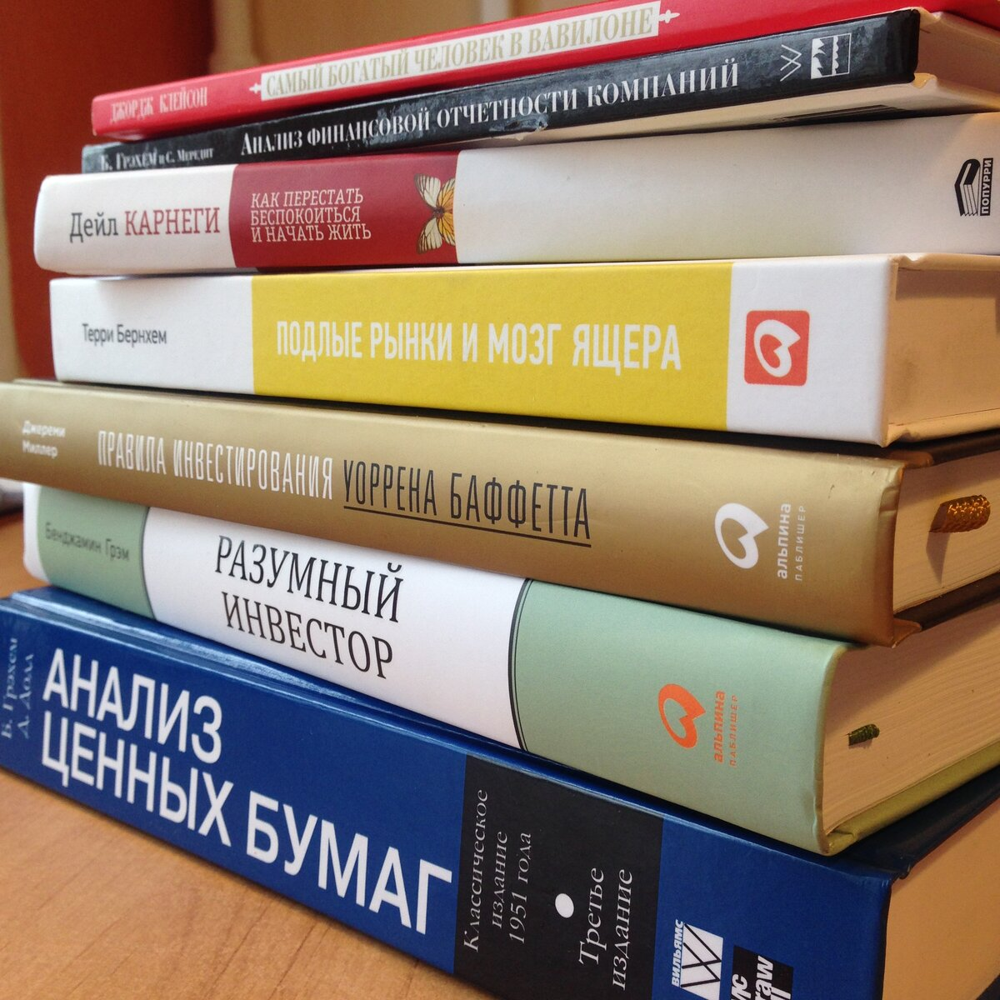

Инвестиции в 2018 году
Итоги инвестиций в 2018 году
Начало инвестирования 29 мая 2018. До этого был опыт инвестиций в ПИФ и скудные знание про фондовый рынок. Весь год, по сути, изучал инструменты инвестирования, брокеров, инструменты для аналитики.
Купил сразу много книг про инвестиции с хорошей скидкой

Бенчмарки
- Индекс Московской биржи: +1.38%
- Широкий индекс Московской биржи: +1.42%
- РТС: -2,47%
- FXRL (ETF на Индекс РТС с дивидендами): +5.84%
Результаты
- ПИФы: -2,11%
- Портфель: -3,6%
К концу года все рынки заваливались, завалился и мой портфель. Год был скорее на столько обучающим, что делать это с такой периодичностью совсем не обязательно.
После года осознал, что некоторые действия я делал не осознанно правильно. Например, ещё за полтора года до этого начал вести семейный бюджет, где планировал все будущие расходы на год вперёд. Это позволяет выделить часть денег для инвестиций, которую действительно можно отнести на рынок и не изымать их следующие десять лет. Это позволяет ещё и планировать большие покупки. То есть, мне было бы сложнее начать без планирования бюджета. На не предвиденные ситуации в семейном бюджете так же есть статья. Всё это защищает наш капитал.
За год разобрался и даже воспользовался такими инструментами как Акции, ETF, ПИФ, Облигации, ИИС и сервисом взаимных инвестиций в малый бизнес.
Про книги.
Практически сразу я начал читать книги про финансы и деньги. Одной из первых прочитал «Капитал» Маркса. Можно сказать книга открыла глаза на потоки денег которые крутятся вокруг человека, этого я раньше не замечал. Теперь постоянно думаю про эти потоки денег, правильно ли я потратил заработанное и заработал ли я положенное. После чего ещё сильнее увлёкся книгами про финансы.
Мой топ книг:
- Самый богатый человек в Вавилоне
- Разумный инвестор
- Подлые рынки и мозг ящера
- Капитал
- Метод Питера Линча
- Правила инвестирования Уоррена Баффетта
Без книг я бы не понял, что на рынках царит психология человека. И именно по этому рынки иррациональны и дают нам возможность купить дешевле, чем оно реально стоит. На этом много заработал Баффетт в начале карьеры и на том, он много времени уделил поиску недооценённых компаний. Рад, что до сих пор рынок даёт такие возможности.
Про стратегию.
Понял, что весь год у меня не было у меня никакой стратегии. Я просто придерживался некоторых правил. Например не покупать совсем дорогое по мультипликатору P/E и искать компании и ROE больше 10-15%. На самом деле покупки в портфеле отражали скорее новые темы инвестиций, которые мне удалось изучить. И под эти темы я искал активы. Например когда я изучал стоимости компаний, покупал самое дешёвое на рынке с интересной историей и менеджментом. Когда читал Линча и изучал компании будущего из «6-го техно уклада». Покупал что-то, что может стать «следующим Apple» через 10 лет. По этому в следующем году буду покупать тот бизнес который мне понятен и мне нравиться. Интересных идей на рынке действительно много. Но какие из этих идей будут прибыльными – никто не знает, нужно приложить усилия для поиска таких идей. Не факт что я буду делать правильный выбор. Я хочу попробовать. Мой портфель сильно не просел, не смотря на то, что в портфеле достаточно много спорных и венчурных позиций.
Тут можно сделать полезный вывод:
Что-бы было меньше потерь в первый год инвестиций – важна широкая диверсификация портфеля
Хорошо, что рынок сглаживает мои ошибки буквально несколькими удачными покупками. Про это писал Питер Линч в своей книге, да он тоже совершал много ошибок, пытался следовать внутреннему предчувствию – о чем и писал в своей книге.